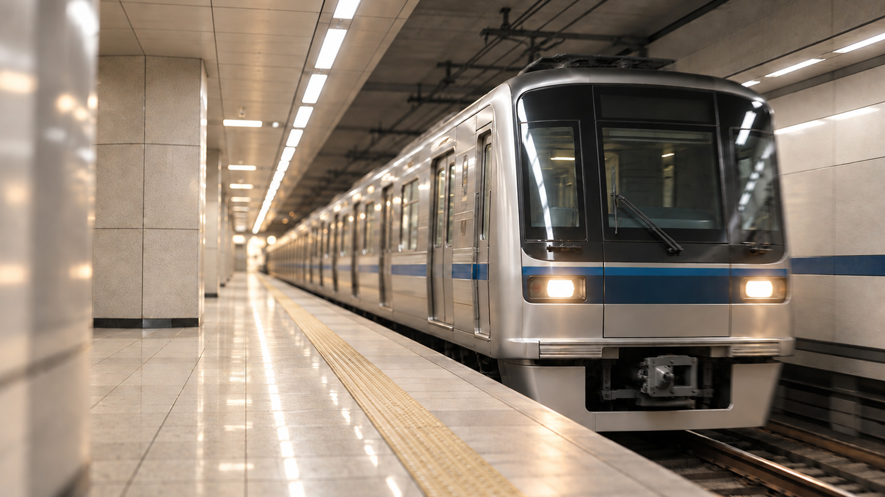
FEATURE
01
서울과 연계된 미래 교통망 계획
대장홍대선 연장 추진,인천 1호선 박촌역
첨단 계양 AX파크와 계양역을 잇는 대장홍대선 연장과 인천 1호선 박촌역의 지하철 교통망.


인천 1호선 박촌역에서 공항철도로 환승해 서울로 이동할 수 있습니다. 단지 주변에는 선형공원과 교육시설 조성이 계획되어 있습니다.
계양역에서 공항철도 환승
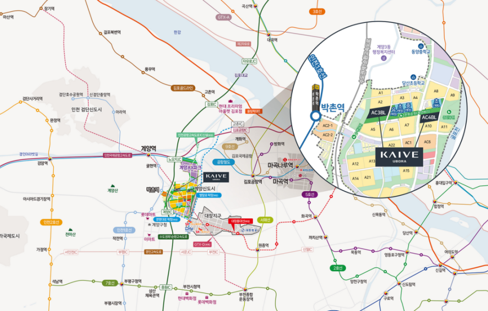
인천 1호선을 이용할 수 있으며 대장홍대선 연장이 추진 중입니다.
단지 주변으로 주거와 교육, 녹지를 연결하는 생활권이 조성될 예정입니다.
신도시를 따라 이어지는 선형공원과 보행 중심 녹지축이 계획되어 있습니다.
단지 인근에 유치원과 초등학교, 중학교가 들어설 예정입니다.
계양신도시에 AI 관련 기업과 연구시설이 들어서는 첨단산업 거점이 추진되고 있습니다.
단지 안에 반도건설의 상업시설 브랜드 몰 ‘시간’이 들어설 예정입니다.
교통·교육·공원 등 개발 계획은 관계 기관의 사정에 따라 변경될 수 있습니다.

서울과 연계된 미래 교통망 계획
첨단 계양 AX파크와 계양역을 잇는 대장홍대선 연장과 인천 1호선 박촌역의 지하철 교통망.
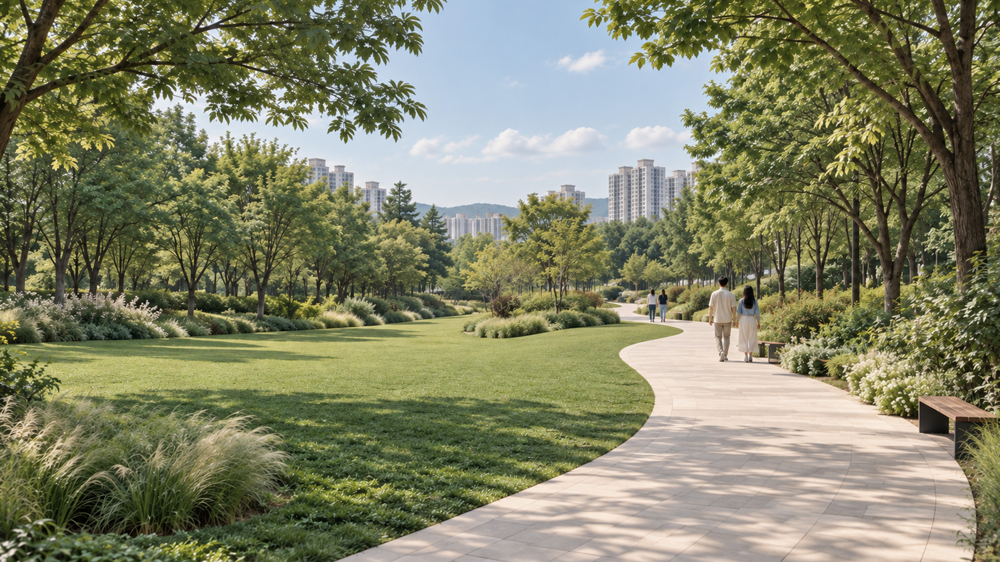
자연 친화적인 쾌적한 3기 신도시
여의도 공원의 약 4배에 달하는 사람 중심으로 보행 특화된 계양벼리 선형공원.
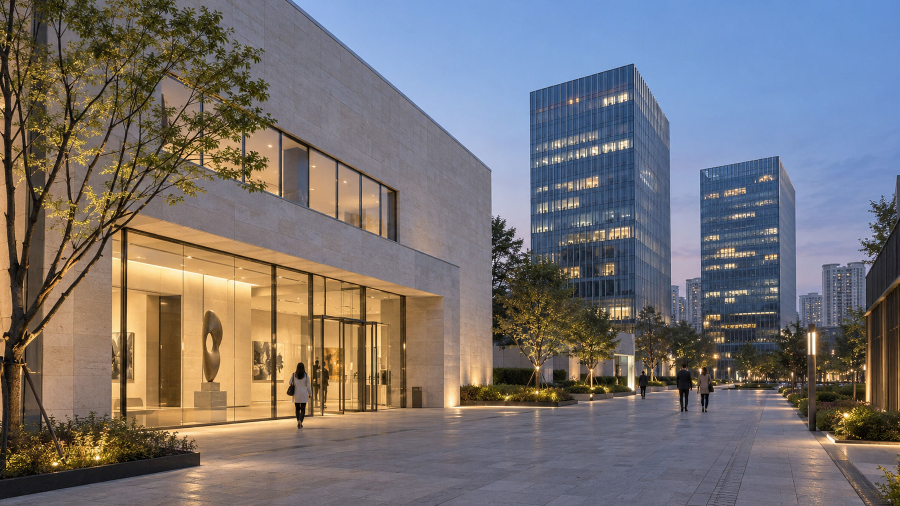
약 335만㎡ 첨단 분야 자족도시
판교 4배인 75.7만㎡의 AI 전환 분야 계양AX파크, 56만㎡의 대기업 중심의 첨단 R&D, 제조를 포함하는 부천 도시첨단산업단지
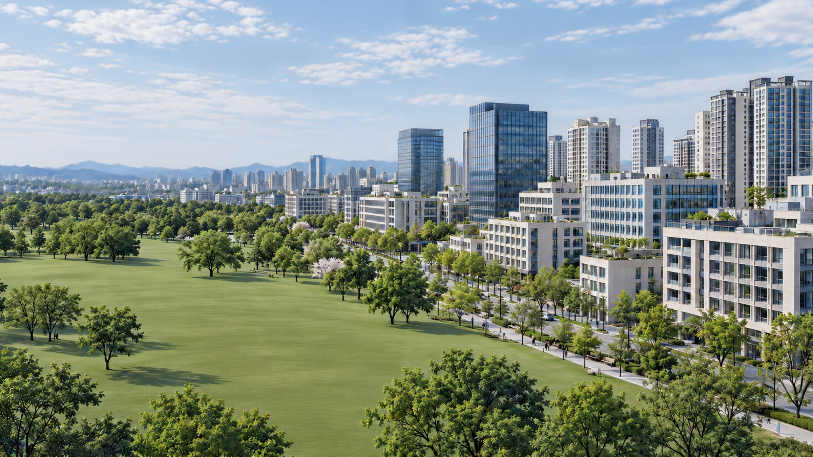
최첨단 계양AX파크
AI연구, 실증, 사업화 및 스타트업 육성, 산학협력 등을 포함하는 AI 용복합 산업 생태계 조성을 중점


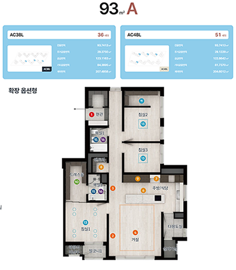
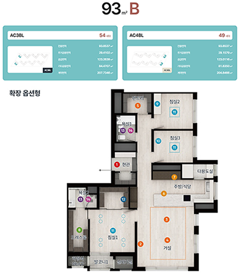

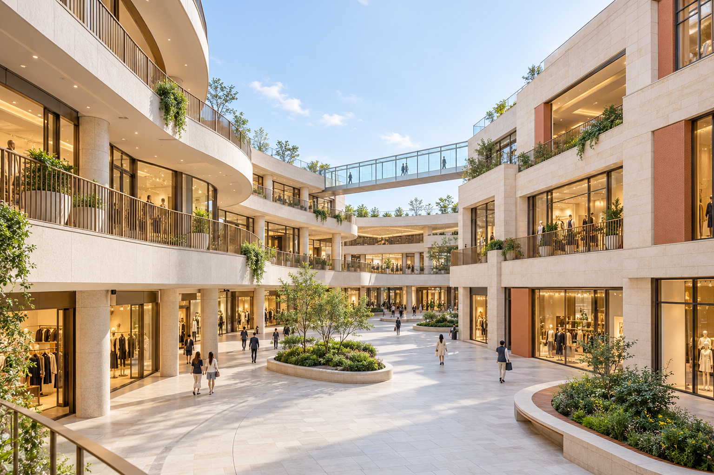
신도시 내 상업용지 비율이 단, 0.9%
계양신도시 내 극히 제한된 아파트 단지 중심의 희소성 높은 프리미엄 상업시설 배치로 안정된 상권입니다.
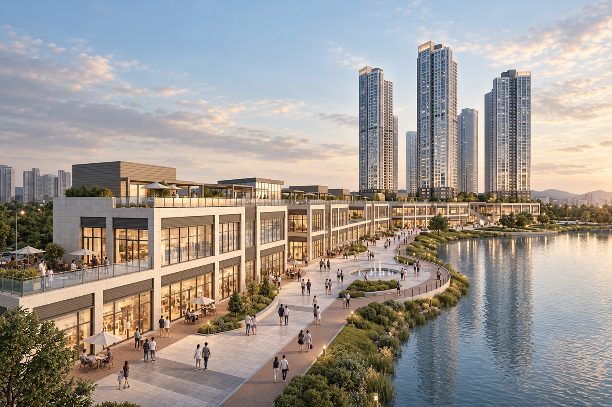
약 5천여 세대 배후의 안정된 상권
신도시 현장에서 검증된 반도건설의 브랜드 몰 MD와 운영 노하우를 그대로 계양에서 선보입니다.
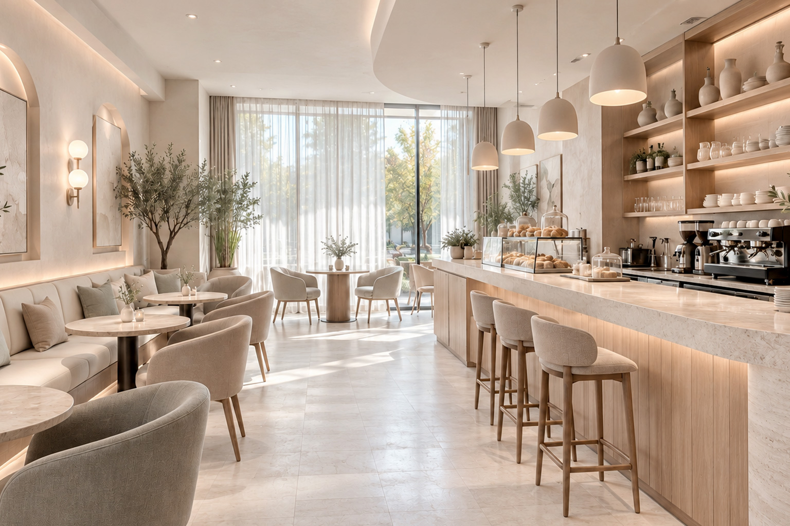
검증된 반도건설의 마스터리스 혜택
분양과 함께 직영 운영을 통해 상권 활성화로 지속 가능한 상권 성장에 마스터리스가 함께합니다.
계양신도시 계획인구 약 4.3만명과 계양AX파크 첨단 산업단지
주거와 업무 수요가 함께하는 상권 입지의 강점을 가진 24시 항아리형 상권입니다.
안정적인 상가 수익 기대
마스터리스에 의한 시행사와 임대 계약으로 확정된 투자 수익 구조로 안심 투자를 기대할 수 있습니다.
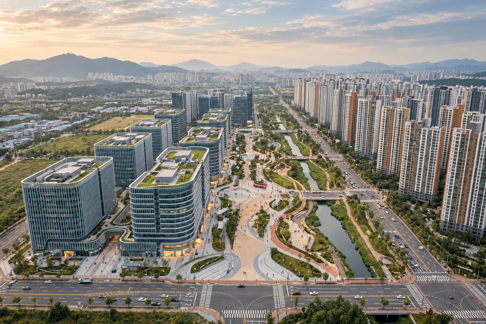
판교 약 1.4배 규모의 AI관련 산업단지
대규모 AI전환 첨단산업단지를 배후로 두어 왕성한 젊은 소비계층에 의한 안정된 높은 수요이 전망됩니다.
계약 시점부터, 투자 수익이 발생하는 이자 지원 혜택
계약과 동시에 계약금에 지원되는 이자 혜택으로 바로 실현되는 투자 수익으로 초기 부담이 크게 줄여듭니다.
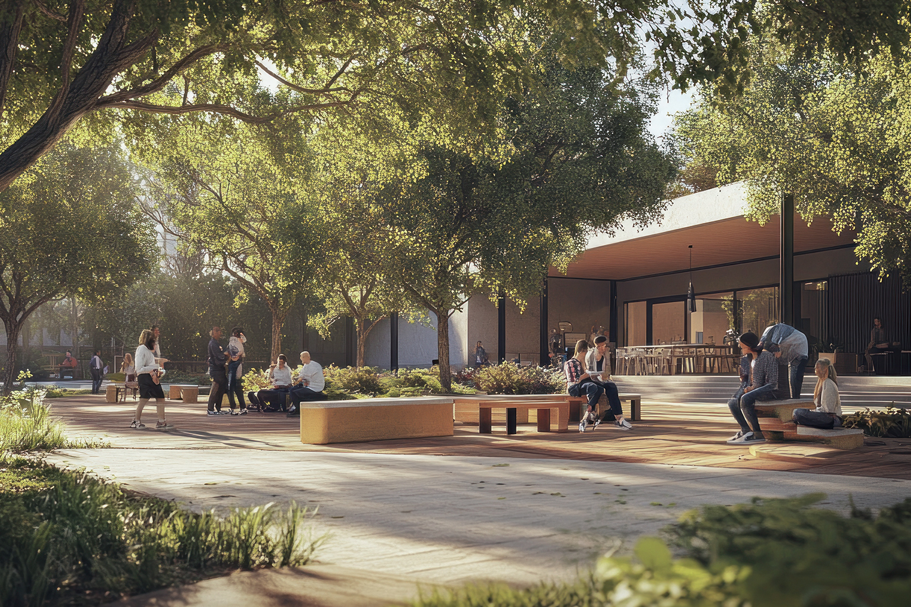
보행자 중심의 선형 공원과 함께, 유·초·중(예정)은 옆에
걷고, 쉬면서 사람을 모으는 선형 공원의 집객 효과와 교육관련 특화된 업종까지 기대할 수 있는 밀착형 상권이 안정된 상권을 기대할 수 있습니다.